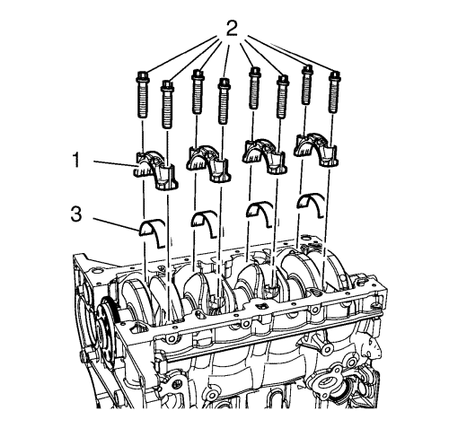
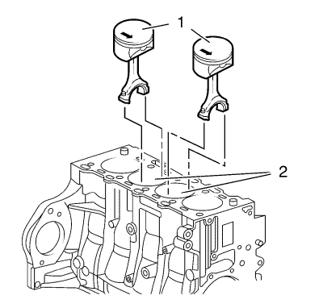
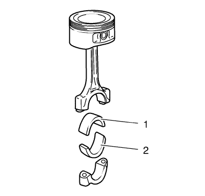

- Monte el tornillo del dámper del cigüeñal.
- Ponga los pistones 1 y 4 en el PMS en el sentido de giro del motor.

Nota: Tome nota de la secuencia de cilindros.
- Marque la biela con la cubierta (1) del cojinete de biela.

- Desmonte los 4 tornillos de los sombreretes de cojinete de biela (2) de los cilindros 1 y 4.
- Desmonte los sombreretes de cojinete de biela (1) y el cojinete de biela (3).

- Empuje los pistones 1 y 4 (1) y sáquelos del orificio del cilindro (2).
Nota: Las superficies de corte la biela y la cubierta del cojinete de biela forman un grupo único y no deben dañarse ni intercambiarse. No se apoye en las superficies de corte.
- Desmonte los pistones 1 y 4 (1).
- Gire el cigüeñal en el compensador del cigüeñal 180° en el sentido de giro del motor.
Nota: Tome nota de la secuencia de cilindros.
- Marque la biela con la cubierta (1) del cojinete de biela.
- Desmonte los 4 tornillos de los sombreretes de cojinete de biela (2) de los cilindros 2 y 3.
- Desmonte los sombreretes de cojinete de biela (1) y el cojinete de biela (3).

- Empuje los pistones 2 y 3 (1) y sáquelos del orificio del cilindro (2).
Nota: Las superficies de corte la biela y la cubierta del cojinete de biela forman un grupo único y no deben dañarse ni intercambiarse. No se apoye en las superficies de corte.
- Desmonte los pistones 2 y 3 (1).

Nota: Observe la posición de montaje y la alineación correctas.
- Desmonte el cojinete de la biela (1, 2).
- Compruebe los componentes. Consultar Limpieza e inspección de pistones, bielas y cojinetes .